音乐、影视、直播，一个入口。
原生 SwiftUI 音乐、影视、直播客户端。iPhone 与 iPad 适用。
iOS 17.0+开源免费MIT 许可证不登录
当前版本 2.1.9（build 46）。下载页始终指向最新发行版。
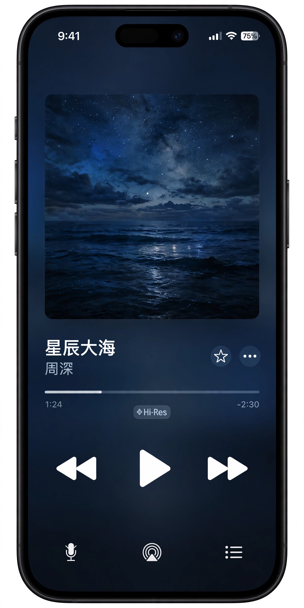
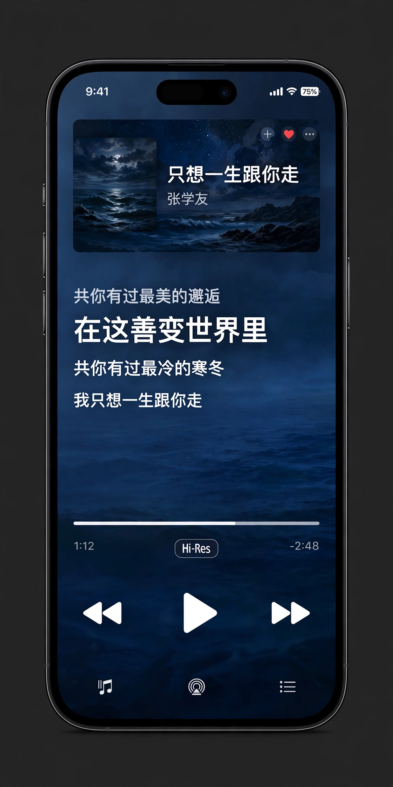
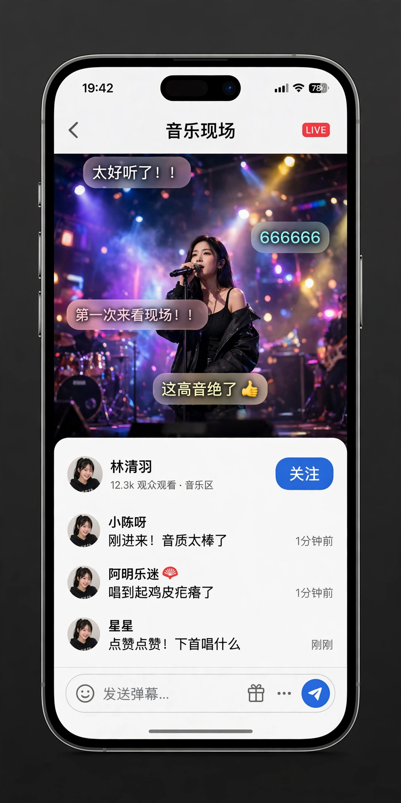
只做这五个直播平台，不加别的。各平台可用功能不同，以应用内为准。
网易、QQ、酷狗、酷我，在同一个界面里搜索、收藏和播放。搜歌合并出结果，网易和 QQ 优先；无限滚动。点歌即播第一个可播放的源，不用等全部源问完。
综合搜索分单曲、歌手、专辑、歌单；网易、QQ、酷狗、酷我合并出结果，网易和 QQ 优先。发现页有每日推荐、排行榜和热门歌单；歌单和专辑详情点开就是曲目列表，点播放即播。
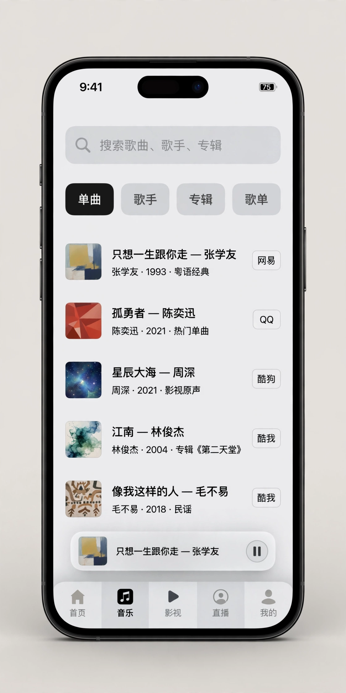
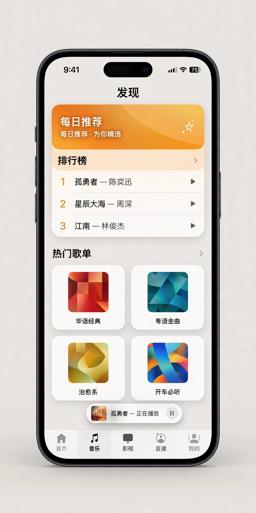
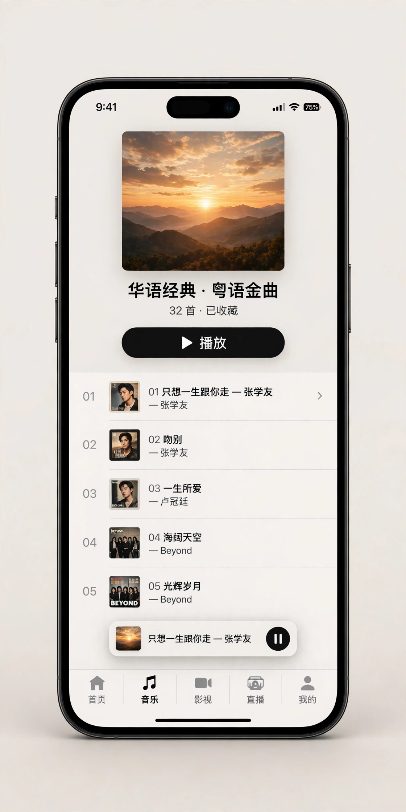
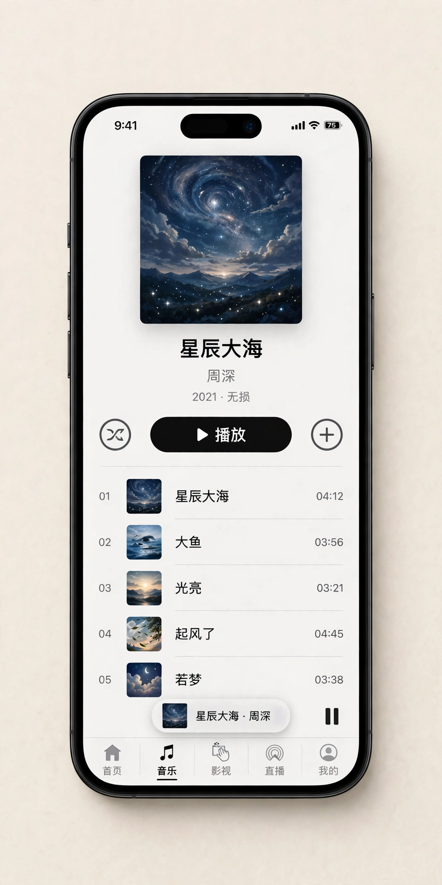
歌词在封面后，左对齐；当前行 28pt 粗体带逐字动效，邻行清晰可读。换主题，歌词跟着换色：暗夜鎏金、清新薄荷、极夜冰蓝。
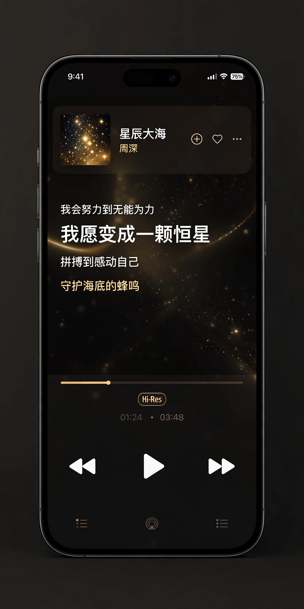
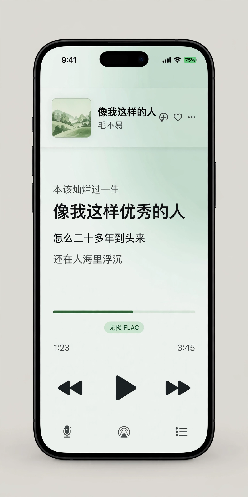
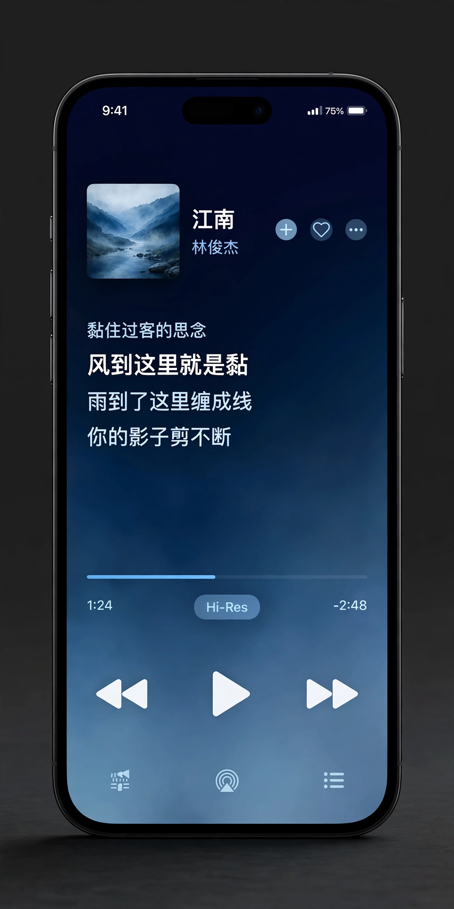
VidHub 风格的浏览与详情页。详情页顶部是封面大图，播放靠下面的选集按钮；点播直接横屏全屏。
Pure Live 风格的直播间、关注、历史、搜索。弹幕只看不发（没有平台登录）。
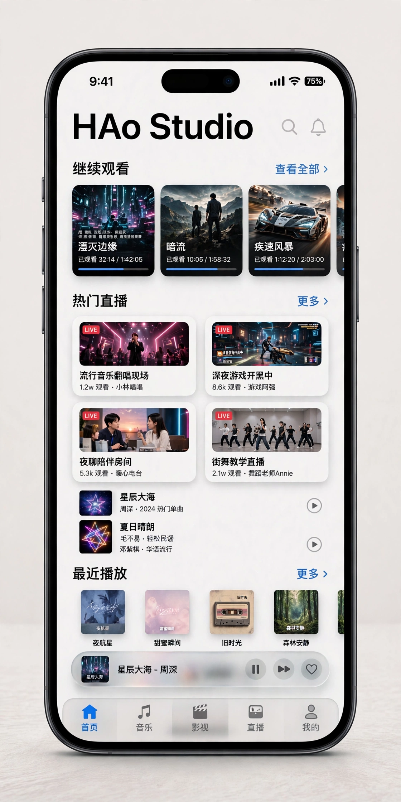
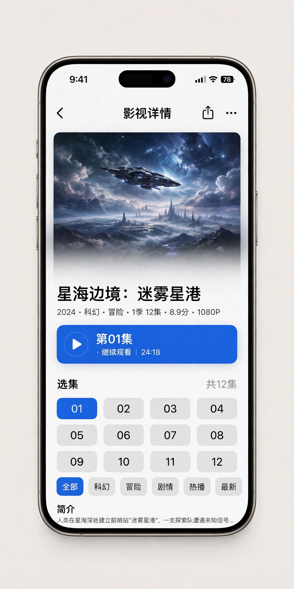
界面渲染图，非实机截图。
iOS / iPadOS 17.0 或更高版本
.ipa。有问题或建议，到 GitHub Issues 反馈（仓库里有反馈模版，点开直接选问题反馈或功能建议）。